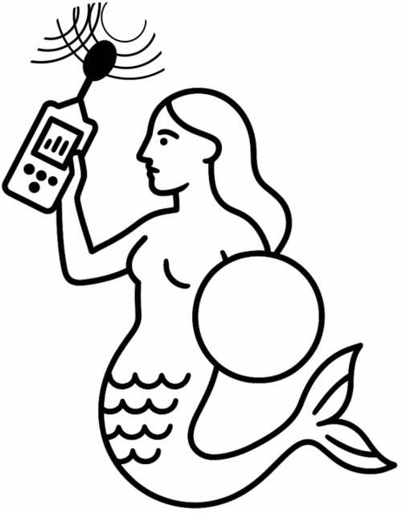

O projekcie mapy hałasu w Warszawie

Projekt mapy hałasu w Warszawie to inicjatywa stowarzyszenia Miasto Jest Nasze, mająca na celu monitorowanie poziomu hałasu w przestrzeni miejskiej stolicy. Warszawa, jak wiele dużych miast, zmaga się z problemem hałasu, który negatywnie wpływa na zdrowie i jakość życia mieszkańców.
Nasza sieć czujników rozmieszczonych w różnych częściach miasta dokonuje pomiarów akustycznych w czasie rzeczywistym. Każdy czujnik mierzy poziom dźwięku w decybelach (dB), ze szczególnym uwzględnieniem wartości Lmax (maksymalnego poziomu dźwięku) i Leq (równoważnego poziomu dźwięku).
Dane z czujników są zbierane i prezentowane na interaktywnej mapie, którą właśnie oglądasz. Dzięki temu mieszkańcy Warszawy mogą sprawdzić, jak głośno jest w różnych częściach miasta.
Nasze cele to:
- Zwiększenie świadomości społecznej na temat zanieczyszczenia hałasem - jego wpływu na zdrowie i jakość życia
- Przekonanie władz miejskich do podjęcia skutecznych działań w celu redukcji hałasu oraz wprowadzenie programów informacyjnych i zdrowotnych
- Współpraca z innymi organizacjami i instytucjami w celu wymiany wiedzy i doświadczeń
- Instalacja i utrzymanie przez m. st. Warszawa sieci czujników w ramach warszawskiej platformy IoT - https://iot.warszawa.pl
Jeśli masz pytania dotyczące projektu, skontaktuj się z nami poprzez stronę miastojestnasze.org.